未来の自分を支える，今の自分であるために ～第２学年「鳥取学」講演会～
2025年2月7日 15時00分「発展的・実践的なプログラムをとおして，新たな価値を創り出す力や高度なコミュニケーション能力を身に付け，社会をけん引する人材を育成する」。本校はこうした目標を掲げ，日々教育活動に取り組んでいます。
この目標を達成する学びの中核をなすもののひとつが，鳥取東高校独自プログラムの「鳥取学」です。
「鳥取学」が掲げる目標は次の２つです。
▶鳥取県内外の様々な分野で活躍中の方々から話を聴くことをとおして，ふるさと・鳥取の素晴らしさや地域貢献の意義を体感するとともに，将来地域を支える人材として，社会課題に対する取り組み方について考える。
▶高校時代に何を身に付ける必要があるか，あるいは，大学でどのような学びを追究するべきかについて考えるとともに，自己の将来や夢そして自分らしい生き方について考える。
令和７年２月５日（水）７・８限。本校のこうした教育目標と「鳥取学」の趣旨に賛同くださる地域の方々をお招きし，第２学年全生徒を対象に講演会を行いました。
今日は，それぞれのご専門分野でキラキラと輝きながら活躍なさる方々が，本校生徒にとって本当に貴重な学びの場をを創出してくださった様子について報告します！
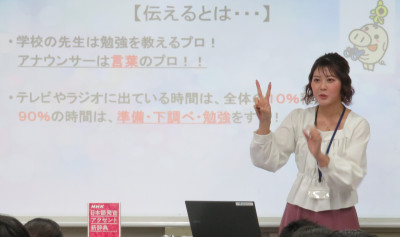 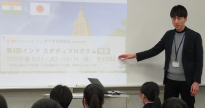
この講演会では，ふるさと・鳥取をフィールドとしてさまざまな分野でご活躍中の11名の方々を講師としてお招きし，生徒と直接かかわっていただきながら協同的に学ぶことを狙っています。
みなさん，お仕事への誇りとお仕事をとおして社会に貢献するとの使命感を持って，日々ひたむきに取り組んでいらっしゃる方々ばかり。そんなみなさんの覚悟や思いについて，生の声と熱量をとおして生徒に伝えていただき，「仕事とは何か？」について生徒に問い，一緒に考える場を創っていただきました。
生徒は，それぞれの興味関心や東高卒業後の進路志望等を踏まえ，本人が希望する２つの異なる講座に参加しました。エキスパート人材ともいえるみなさんだからこそ語っていただける「現場リアル」に基づく様々な話を聞き，自分と社会の繋がりや自らの進路，生き方について考えることをテーマに，いざ開幕！
この「鳥取学」講演会で，生徒はどんなことを感じ，考えたのか…。生徒の感想（抜粋）をとおしてお伝えします。
＊＊＊＊＊＊＊＊＊＊＊
〈分野：看護・助産師〉
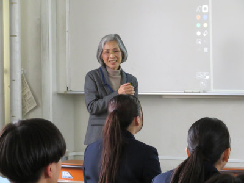
▶命と日々向き合いながら，自分の得意なことややってみたい分野で専門性を深めて認定看護師になられている姿を見てとても感動しました。男性の看護師は徐々に増えてきていると思うので，男性ならではの看護や自分の興味がある災害医療の分野で活躍できるように頑張りたい，と改めて思いました。まずは，様々な大学を調べながら「自分が看護師になったら何をしたいのか」など，自分を見つめる時間と様々な体験をして自分の引き出しを増やしていきたいと思いました。
▶看護師として命に関わる自覚と責任を持って，相手の痛みや辛さに共感するコミュニケーションをとることが大切だとわかりました。生涯を通してすべての人の健康を守れる看護師はすごい仕事だと思ったし，今自分がしなければいけないことを地道に続けていけるようにしたいと思います。
〈分野：国際協力活動・ものづくり〉
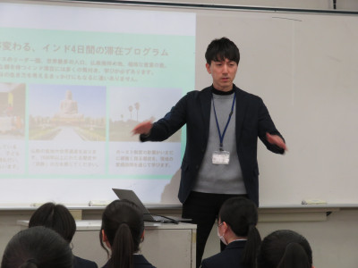
▶「自分が夢中にやっていることには努力では埋められないものがある」という言葉がとても印象的でした。自分の好きなことや夢中になれることに堂々と挑んで行けるような大人になりたいなと思いました。これからの進路選択に向けても，常に自分の夢中になれるものは何か，できることは何か，ということを常に大事にして考えていきたいです。
▶実際に海外に行かなければ，その地域の実態をつかむことは難しいと思いました。寄付だけではなく，実際に現地へ出向き支援をしたいと思います。
〈分野：地域・経営〉
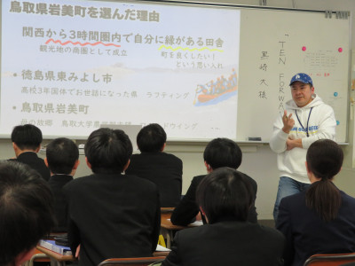
▶まず常識を疑ってみて，行動に移すことが大事だと気づきました。また，勉強ができるだけでなく，自分から何かを企画したりアイデアを出す訓練したりすることで，AIの社会でも人間らしく働けると知りました。今自分が何をしたいかということと，自分に求められていることを見極めて，物事に取り組んでいきたいです。
▶行動力と想いを言語化することが大切ということがわかりました。遊びや自分の興味のあることを仕事として続けていくためには，知識や技術も大事ですが，周りで支えてくれている人たちに自分の意見を伝え，行動することが大事だということもわかりました。今後，自分に何かやりたいことがあった時には，周りにいる友だちや家族・部活の仲間に言語化してきちんと伝えようと思いました。
〈分野：メディア〉
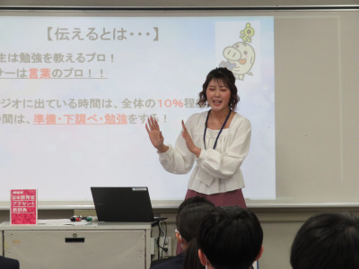
▶視聴者は目で見たもの，音で聞いたものからしか情報を得られないから，いかに一発で視聴者に情報を伝えられるかが重要で，そのために見えない努力をたくさんしているということを聞いて「プロフェッショナルだな」と思いました。わかりやすく情報を伝えてくださるアナウンサーのみなさんに感謝です！また，中尾真亜理さんみたいに，せっかく１週間のうちの半分以上の時間，学校に行っているんだから，休みのためにがんばるというよりまず学校を楽しめるように考えを変えたいと思いました。最後にお話できて，背中押してもらって嬉しかったです！ありがとうございました！
▶影の努力をされていることを知って，なりたい職業につくのがゴールじゃなくて，ついてからの自分の行動が大事だと思った。就職後に行動できる人になれるように今から習慣をつけることが大切だと感じた。
〈分野：薬剤師・医療〉
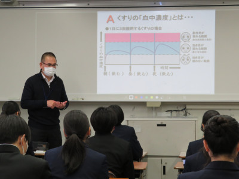
▶「薬剤師は街づくりにかかわる」というお父さんの言葉に感化されて薬剤師を目指そうと決心したと聞いて，直感的に「あ，これだ」と思って，難しい学問にもかかわらず，迷わず薬剤師を目指したことに感銘を受けました。たとえ今まで全然考えてなかったことや難しいことだったとしても，やりたいことに挑戦する大切さが分かったので，その意識を持ち続けたい。
▶「自分が育ってきた地元のために，また，困っている人を助けるために働いている」という講師の方の話を聞いて，お金を稼ぐために働くだけではなく，人のために働けるようになりたいと思った。将来医療に関わる仕事に就き，人のために一生懸命働きたい。
〈分野：スポーツ・リハビリ〉
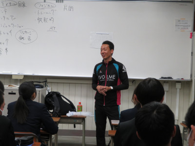
▶患者の意見を絶対に否定しないことで，相手にも余裕が生まれて，自分の話も聞いてもらいやすくなるという話を聞き，普段の生活でもそれを意識するとうまく会話ができると思いました。今後，活かしていきたいです。
▶私は基本的に体を動かすことが好きで，運動部に所属しています。スポーツをする中で怪我はつきものですが，選手を支える側の人たちについては何も知識がありませんでした。今回の講演でこんなにも選手を支える仕事があることにとても驚きました。今回学んだことは自分の進路実現に向けて役立てていきます。ありがとうございました。
〈分野：バイオ・創薬〉
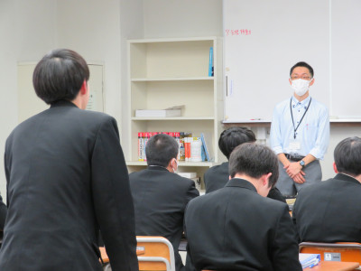
▶「ワクワクする方の道を選ぶ」ということが心に残った。私はまだ進路を完全に決めていないので，自分のワクワクするものを追求していけたらいいなと思いました。
▶コロナウイルスのワクチンの開発の詳しい話を伺うことができた。講義中に，習っている生物の知識が出てきたとき，「生物を学んでいてよかった」と感じた。この気持ちを勉強で発揮しようと思った。
▶ヒト抗体産生マウスについてお話されていたことが大変興味深く感じました。今はまだ人に投与できない薬であっても，マウスを通じて今まで解明されていなかった病気を治せる可能性を秘めていると感じました。先生が仰っていた「量の上に質がある」という言葉は，日々の勉強や受験勉強にも通じる考え方だと感じたので，意識して取り組んでいきたいです。
〈分野：法律・検事・弁護士〉
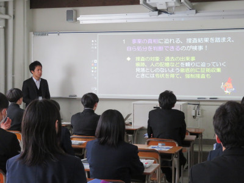
▶検察官の印象が変わりました。自分が思い描いていたのとは違い，被疑者と被害者の話をよく聴き，自分の判断が正しいと確信してから処分を決定されることを知り，何でもかんでも起訴したいわけではないことをいろいろな人に広めたいと思いました。「日本の裁判における有罪率は99.9％」この数字にはあまり意味がなく，起訴，起訴猶予，不起訴，その他処分の割合をもっといろいろな方に伝えるべきだと思いました。検察官は誰かを幸せにすることのできる仕事でありながら，誰かの人生を大きく変えてしまうこともあるお仕事で本当に大変だと思いますが，これからも市民のためにがんばってください。
▶ニュースなどでよく見る「〇〇〇さんが起訴されました」という言葉は，検事の方々をはじめ，たくさんの人が関わった結果だと知りました。講演の最後におっしゃっていた「興味を持ち経験する」ということを今後の生活で実践し，新たな視野を広げていきたいなと思いました。
〈分野：研究者・生物学〉
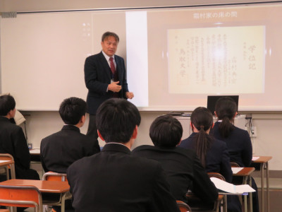
▶霜村先生がどのようにきのこ研究に関わっているのか，とても興味深いお話を聞けて大満足です！これからの生活で霜村さんのように横のつながりや縦のつながりを大事にしていきたいと思います。
▶大学でどのように過ごしていくのか，また大学での経験がその後どのように生かされているのかについて，経験談とともに高校生である私達にもわかりやすいように講演をしていただいた。この講演を大学進学またその後の進路選択の参考として活かしていきたい。
〈分野：教育・特別支援教育・小学校〉
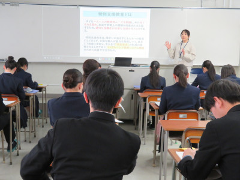
▶学校や身の回りのいろいろな所にも，子どもを支援するための工夫がされていたのだなと思ったし，気づいていなかっただけでたくさん配慮されていたんだなと思いました。話を聞いて，子どもは先生や親，兄弟からの影響を受けやすいんだなと思いました。今回の講義で一人ひとりの個性を尊重することが大切だと知ったので，自分の個性を大切にするのはもちろん，その個性を家族や友達などに理解してもらうことが大切だと思いました。先生の「この一年間の頑張りでこの先何年分の将来が変わる」という言葉が，受験勉強にやる気が出ない私にすごく響きました。その言葉を忘れずに頑張ろうと思います。
▶子ども一人ひとりの特性を理解したうえで，個人に必要な合理的配慮をして環境を整え．同じスタートラインに持っていくことが大切だとわかりました。これから，子どもだけでなく多くの人と関わる中で，自分だけでなく相手の心も言語化し，共感する接し方ができるようにしたいと思ったし，困り感を安心感に変えていけるような接し方についてもっと考えてみたいなと思いました。
〈分野：経営・工業〉
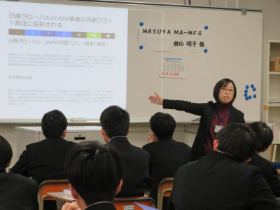
▶お話を聞いてすごいと思ったことは，世界恐慌やコロナを耐え切り，女性には無理だと言われながらも仕事を見つけて会社を守ったことです。これを聞いて，どんなときも諦めてはいけないということや，無理だと言われても物事に真摯に向かい続ければ，いつかは分かってくれる人や仲間に出会えることを学びました。
▶人生の転機は人それぞれにあり，そこで何をどう活かすかが大切だと思いました。また自分の意見を突き通すだけでなく，人の意見にも耳を傾けたり，自分の意見をしっかりと表現したりすることも大切だと分かりました。今の時期から自分で行動することを習慣づけておきたいです。
▶最初に「君たちが今から言うことは全て正解」と言ってくださったのが嬉しかった。自分の住んでいる県にはいい会社があるなあと再認識できた。
＊＊＊＊＊＊＊＊＊＊
人への思いやりや優しさが直球で伝わってきたり，実にスケールが大きく，ダイナミックな展望と取組に心がワクワクしたりする，そんな時間と学びがあちこちで繰り広げられていたことがうかがえるかと思います。
事実，どの講師の方々も，事前にお送りした生徒からの質問に触れてくださっていました。質問に込めた思いそのまま受け止めた上で，決して子ども扱いすることなく，丁寧かつ本気で回答くださりました。生徒にとって実に大きな意味と意義を持つ時間でした。
この時期の２年生は３年生への進級を控え，自分の将来について考える機会が増えています。この講演会を踏まえ，一人ひとりが持つ可能性を感じとり，果敢に挑戦する気概と，一歩前に踏み出す勇気そしてエネルギーを得てくれていればとても嬉しく思います。
当日は，寒空の下，雪が舞う悪天候となりました。そんな中，本校に足をお運びくださり，渾身の講演をしてくださった講師の先生方，本当にありがとうございました。